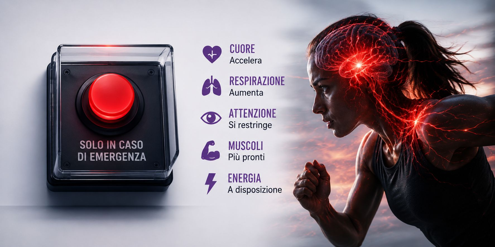

Cosa succede nel cervello quando siamo sotto pressione?
La neuroscienza dietro i momenti che contano davvero.
Ilaria Dammicco
Pubblicato il 26 Giugno 2026 · 12 min di lettura
Hai presente quando entri in una stanza con un obiettivo chiarissimo e, appena varchi la porta, ti dimentichi completamente cosa dovevi fare?
Oppure quando stai presentando un progetto che hai preparato per settimane e, proprio davanti alle persone, quella parola così semplice sembra improvvisamente sparire?
O ancora quando un atleta esegue lo stesso gesto centinaia di volte durante gli allenamenti e, nella gara più importante della stagione, quel movimento appare improvvisamente meno fluido, meno preciso, quasi "strano"?
La sensazione è sempre la stessa:
"Il mio cervello mi ha tradito."
In realtà, la neuroscienza racconta una storia completamente diversa.
Il cervello non dimentica improvvisamente ciò che hai imparato.
Semplicemente cambia le sue priorità.
Ed è proprio questa riorganizzazione, invisibile ai nostri occhi, che può fare la differenza tra una prestazione brillante e un errore inaspettato.
Nel precedente articolo abbiamo visto che la pressione non è necessariamente il nemico: tutto dipende da come la interpretiamo e da come il nostro cervello decide di gestirla.
Oggi facciamo un passo ancora più in profondità.
Entriamo letteralmente dentro il cervello.

Se il cervello fosse un'azienda…
Se il cervello potesse parlare, probabilmente ci direbbe una cosa molto semplice:
"Non sto cercando di farti vincere. Sto cercando di tenerti al sicuro."
È una frase che può sembrare strana.
Dopotutto, se hai passato mesi ad allenarti per una gara o settimane a preparare una presentazione importante, perché proprio nel momento decisivo il cervello dovrebbe complicarti la vita?
La risposta è che non lo sta facendo.
Sta facendo esattamente ciò per cui milioni di anni di evoluzione lo hanno progettato.
Corteccia Prefrontale
L'Amministratore Delegato
Pianifica, prende decisioni, mantiene la concentrazione, controlla gli impulsi e coordina le funzioni esecutive. Finché tutto procede normalmente, è lei a prendere le decisioni.
Amigdala
Il Responsabile della Sicurezza
Riconosce ciò che potrebbe rappresentare una minaccia. Quando scatta un allarme, entra nella sala riunioni senza bussare e, per qualche istante, prende il comando.
Il cervello cambia modalità di funzionamento
Molti immaginano il cervello come un computer che, sotto stress, inizia semplicemente a funzionare peggio.
La realtà è molto più affascinante.
Il cervello cambia modalità operativa.
Stratega
Pianifica. Valuta. Ragiona. Costruisce scenari.
Pompiere
Ha un solo obiettivo: spegnere l'incendio.
Dal punto di vista evolutivo è una scelta estremamente intelligente.
Se un nostro antenato si fosse trovato davanti a un predatore, fermarsi ad analizzare tutte le possibili alternative non sarebbe stata una grande idea.
Serviva reagire. Subito.
Il problema è che oggi il cervello utilizza lo stesso sistema anche quando il "pericolo" è una finale, un colloquio di lavoro o una riunione con il management.
Per lui ciò che conta è il significato che attribuiamo alla situazione, non il fatto che il rischio sia realmente fisico.
Il pulsante rosso dell'emergenza
Immagina di avere davanti un grande pulsante rosso con scritto: "Premere solo in caso di emergenza."
Ecco, il cervello possiede davvero qualcosa di molto simile.
Quando percepisce una situazione come altamente significativa, attiva il cosiddetto asse ipotalamo-ipofisi-surrene (asse HPA).
Nel giro di pochi secondi vengono rilasciate sostanze come adrenalina, noradrenalina e cortisolo.
Queste molecole hanno un obiettivo preciso: preparare il corpo all'azione.
Cuore accelera
Respiro aumenta
Muscoli più sangue
Attenzione selettiva
È un sistema straordinario.
Il problema è che questa risposta è perfetta per scappare da un pericolo, molto meno per prendere decisioni complesse, mantenere la concentrazione o ricordare informazioni importanti.

Perché sotto pressione "si svuota la testa"?
Quante volte hai sentito qualcuno dire:
"Avevo studiato tutto, ma in quel momento non mi veniva in mente niente."
Non è solo una sensazione.
Una delle funzioni più sensibili alla pressione è la working memory, cioè la memoria di lavoro.
È il sistema che ci permette di mantenere e manipolare le informazioni mentre stiamo svolgendo un compito.
Immaginala come la scrivania del tuo ufficio.
Quando sei tranquillo
Sopra quella scrivania c'è spazio per documenti, idee, appunti e ragionamenti.
Sotto pressione
È come se qualcuno ci rovesciasse sopra notifiche, telefoni che squillano, fogli sparsi e post-it.
La scrivania è sempre la stessa. Ma improvvisamente diventa molto più difficile trovare ciò che stai cercando.
Ecco perché uno sportivo può dimenticare una scelta tattica apparentemente semplice o un manager perdere il filo del discorso durante una presentazione.
Non sono diventati meno competenti.
Hanno semplicemente meno "spazio mentale" disponibile in quel momento.
E se la pressione dura troppo?
Finora abbiamo parlato di stress acuto, quello che compare prima di una gara, di un esame o di una riunione importante.
Ma esiste una differenza fondamentale.
Stress Acuto
Può persino essere utile. Ci rende più vigili, più pronti, più reattivi.
Stress Cronico
Racconta un'altra storia. Il cervello esposto per settimane a cortisolo elevato perde efficienza.
Quando il cervello rimane esposto per settimane o mesi a livelli elevati di cortisolo, alcune aree come la corteccia prefrontale e l'ippocampo, fondamentale per memoria e apprendimento, iniziano a funzionare con minore efficienza.
Per questo motivo chi vive costantemente sotto pressione non si sente soltanto più stanco.
Può diventare meno flessibile, più impulsivo e avere maggiori difficoltà a concentrarsi o prendere decisioni.
La vera domanda
Arrivati a questo punto potremmo pensare che la soluzione sia eliminare la pressione dalla nostra vita.
In realtà sarebbe impossibile.
E, probabilmente, nemmeno desiderabile.
La pressione fa parte della vita di un atleta, di un imprenditore, di uno studente e di chiunque abbia obiettivi importanti.
La domanda giusta diventa allora un'altra:
"Come posso allenare il mio cervello a funzionare bene anche quando la pressione aumenta?"
La buona notizia è che oggi sappiamo che il cervello è plastico, cioè capace di modificarsi attraverso l'esperienza e l'allenamento.
Routine pre-performance, respirazione, visualizzazione, dialogo interiore ed esposizione graduale alle situazioni stressanti non sono semplici "trucchi motivazionali": sono strumenti che aiutano il cervello a gestire meglio la risposta alla pressione.
Ed è proprio di questo che parleremo nei prossimi articoli.
Lo sapevi?
Sebbene rappresenti solo circa il 2% del peso corporeo, il cervello consuma circa il 20% dell'energia totale del nostro organismo.
Quando siamo sotto pressione, gran parte di queste risorse viene destinata ai sistemi di allerta e sopravvivenza. È anche per questo che, dopo una gara importante, una lunga presentazione o un colloquio particolarmente impegnativo, possiamo sentirci mentalmente esausti anche senza aver svolto un grande sforzo fisico.
Una riflessione prima di salutarci
La prossima volta che sentirai il cuore accelerare prima di una gara, di una presentazione o di un colloquio, prova a ricordare una cosa.
Il tuo cervello non sta cercando di sabotarti. Sta facendo esattamente ciò che milioni di anni di evoluzione lo hanno progettato a fare: proteggerti.
La differenza tra chi crolla e chi riesce a performare non sta nell'avere un cervello diverso.
Sta nell'aver imparato ad allenarlo.
Ci vediamo sabato prossimo!
Nel prossimo articolo entreremo ancora più nel pratico e parleremo di come allenare il cervello a gestire la pressione nei momenti che contano davvero.
Se non vuoi perderlo, iscriviti alla newsletter: ogni sabato troverai un nuovo articolo dedicato alla psicologia della performance, con strumenti pratici, basi scientifiche e strategie applicabili nello sport, nel lavoro e nella vita quotidiana.
Riferimenti bibliografici
Arnsten, A. F. T. (2015). Stress weakens prefrontal networks: Molecular insults to higher cognition. Nature Neuroscience, 18(10), 1376-1385.
Joëls, M., Fernandez, G., & Roozendaal, B. (2018). Stress and emotional memory: A matter of timing. Trends in Cognitive Sciences, 22(9), 731-741.
Herman, J. P., et al. (2020). Regulation of the hypothalamic-pituitary-adrenocortical stress response. Comprehensive Physiology.
Otten, M. (2009). Choking vs. Clutch Performance Under Pressure. Journal of Sport and Exercise Psychology, 31, 583-601.
Mandrick, K., et al. (2016). Neural and psychophysiological correlates of human performance under mental workload.
González-Palau, F., et al. (2022). Effects of chronic occupational stress on executive functions and brain health.
Russell, G., & Lightman, S. (2019). The human stress response. Nature Reviews Endocrinology.
Ogni grande risultato
inizia da un primo passo.
Se questo articolo ti ha toccato, significa che c'è già un'area su cui lavorare. Il prossimo passo è trasformare la consapevolezza in azione.